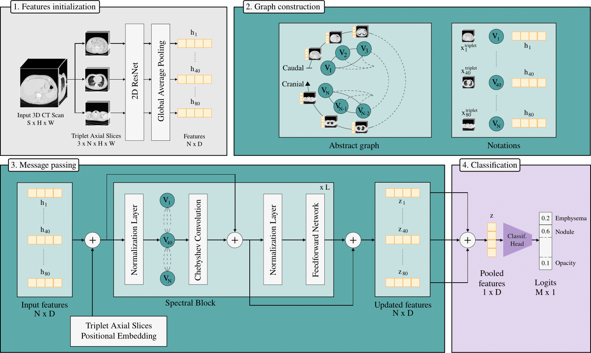
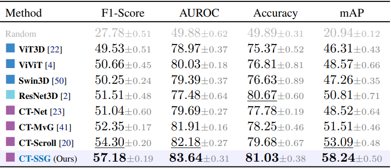
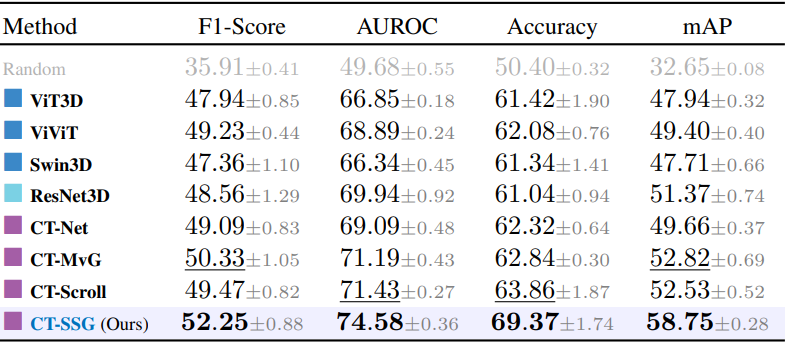
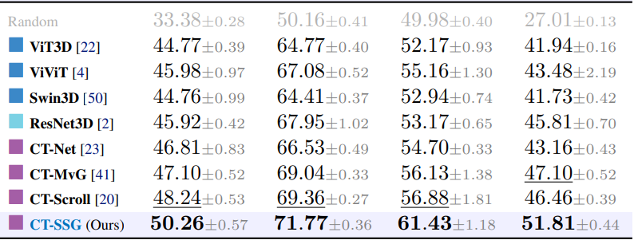
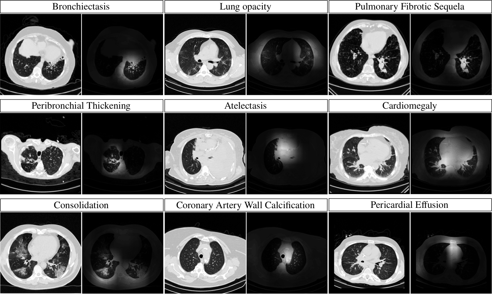
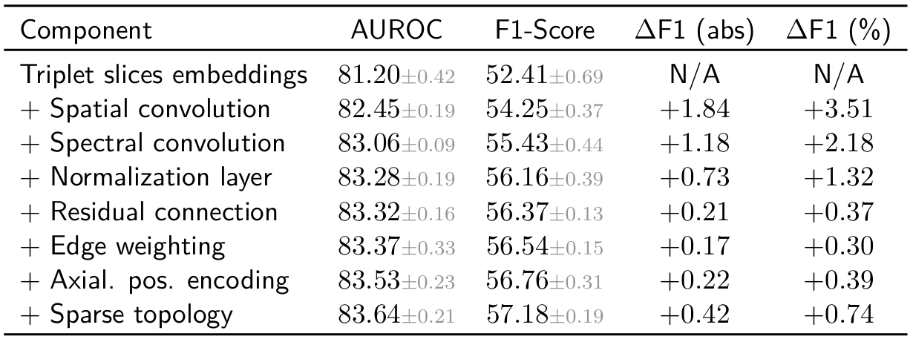
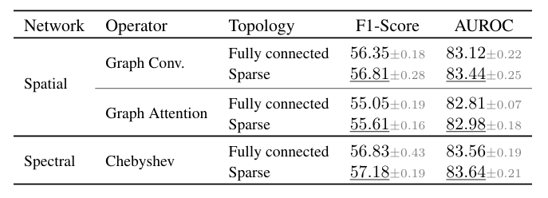
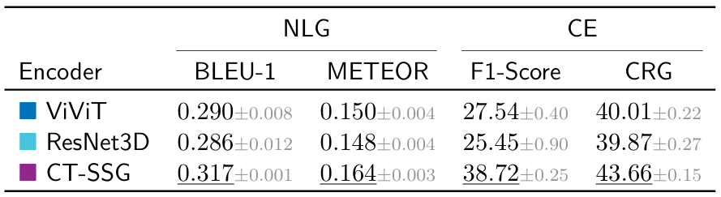
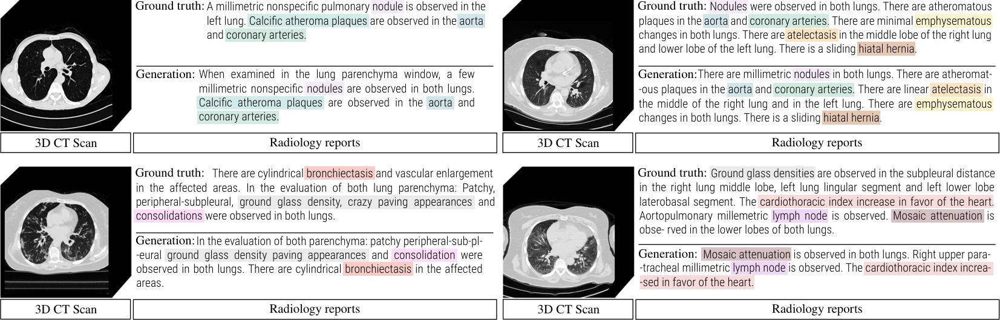
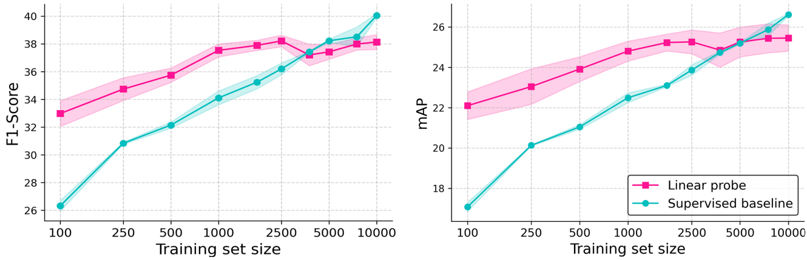

(1) Adjacent axial slices are grouped into triplets, each representing a node in a graph. (2) Edges between nodes are weighted according to their physical distance along the z-axis. (3) Node features are enhanced with Triplet Axial Slices positional embeddings, and then processed by a Spectral Block that incorporates Chebyshev graph convolution for structured spectral modeling. (4) The resulting node representations are aggregated via mean pooling and passed to a classification head to predict abnormalities.

Models are trained on CT-RATE, using 5-fold cross-validation patient-level splits. Evaluation include an internal validation on the held-out CT-RATE test set, as well as cross-dataset evaluations on RAD-ChestCT and the private CT-HCL. We benchmark CT-SSG against 2.5D and 3D visual encoders including convolutional, transformer-based and hybrid architectures.
We first evaluate visual encoders on the multi-label abnormality classification task. Performance is assessed using F1-Score, AUROC, Accuracy and mAP.
Internal. Reported metrics are averaged across the 18 classes from CT-RATE. CT-SSG yields the best performances across all metrics (paired t-test across folds, p < 0.01), with a +Δ8% improvement in AUROC over ResNet3D, and +Δ6% over ViT-3D.



Incremental ablation. Starting from the initialization of the node features to the full CT-SSG architecture, we quantify the impact of each component. The cumulative trend suggests that the model benefits from the synergistic effect of multiple choices.

Graph convolutional operators. We also evaluate abnormality classification performance across different graph operators, replacing the spectral-based Chebyshev operator with spatial ones, including graph convolution and graph attention operators, also varying the graph topology. These empirical results highlight the advantage of spectral formulations over spatial ones to capture dependencies across axial slices.

Quantitative analysis. CT-SSG is further evaluated on the automated report generation task. To isolate the effect of latent representation quality, we adopt a deliberately simple encoder-decoder architecture inspired by CT2Rep. The visual encoder is pretrained and kept frozen, while the decoder is trained on the next-token prediction task. We select a representative set of baselines, including the transformer-based ViViT and the fully convolutional ResNet3D. We report Natural Language Generation (BLEU-1, METEOR) and Clinical Efficacy (macro RadBERT F1-Score, CRG) metrics on the held-out CT-RATE test set. CT-SSG achieves substancial improvements over baseline visual encoders.

Qualitative analysis. Below, the figure shows examples of generated reports using CT-SSG as visual encoder. Color-coded terms indicate detected abnormalities, illustrating CT-SSG's ability to generate reports with relevant terminology.

We further investigate the cross-domain generalization of our learned representations by extending evaluation to 3D abdominal CT scans, leveraging the Merlin Abdominal CT dataset. As only radiology reports are available, pseudo labels are extracted using LLaMA 3.1. We perform a linear evaluation on the abnormality classification task, varying the training set size from 100 to 10,000 samples. CT-SSG, trained on CT-RATE chest CT volumes, is kept frozen while a linear layer is trained on the classification task with Binary Cross-Entropy supervision. Compared to an end-to-end supervised baseline with no chest CT pretraining, the linear probing configuration demonstrates improved performances for low-data regime scenarios.

In this work of academic research, our experiments are run on public CT datasets. We acknowledge contributors from CT-RATE [1], RAD-ChestCT [2], and Merlin Abdominal CT [3]. for releasing the datasets to the research community.
[1] Generalist foundation models from a multimodal dataset for 3D CT. Hamamci et al. 2026.
[2] Machine-learning-based multiple abnormality prediction with large-scale chest CT volumes. Draelos et al. 2021.
[3] Merlin: a computed tomography vision–language foundation model and dataset. Blankemeier et al. 2026.
@article{dipiazza_2026_ctssg,
author = {Di Piazza, Theo and Lazarus, Carole and Nempont, Olivier. and Boussel, Loic},
title = {Structured Spectral Graph Representation Learning for Multi-label Abnormality Analysis from 3D CT Scans},
journal = {Under review},
year = {2026},
}